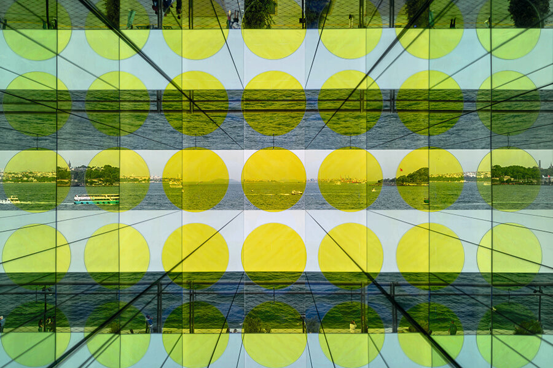

Chiharu Shiota'nın Japonya ve Türkiye arasındaki diplomatik ilişkilerin kuruluşunun 100. yılı kapsamında Türk Çağdaş'ın davetiyle düzenlediği "Between Worlds" adlı kişisel sergisi, sanatçının "bir yerlerde aralarda" olma duygusuna odaklanıyor. Serginin kavramsal çerçevesini şekillendirirken Shiota, İstanbul'un Asya ve Avrupa arasındaki konumundan yararlanıyor. Sanatçı, limana yanaşan ve limandan ayrılan gemiler, bu gemilerde yolculuk eden yolcular, onların hikayeleri ve kendi göç hikayesi arasında bir bağ kuruyor.

"Renklerin Yolculuğu" sergisi, İzzet Keribar’ın 1,5 milyonluk arşivinden seçkilerle, renk, ışık, doku ve grafik kompozisyon gibi belirgin unsurlarını vurguluyor. Sanatçının yıllar içinde gelişen stilini yansıtan sergi, izleyicileri farklı zaman ve mekanlara taşıyor. Altı bölümden oluşan sergide, 1950’lerden İstanbul ve Güney Kore fotoğrafları, 1980’lerden itibaren İstanbul’un gündelik yaşamını belgeleyen eserler, doğa ve kentsel manzaralar, dünyanın farklı yerlerinden portreler ve Keribar’ın yarı soyut çalışmaları yer alıyor.
Sergi başlığı, tasarladığı yapıların çevrelerinde yer alan somut unsurları fiziki olmayan değerler ile bütünleştirme vizyonuyla hareket eden Renzo Piano’nun mimari anlayışına atıfta bulunuyor. Sergide, Piano’nun Boğaziçi ve İstanbul’a özgü ışık ve atmosferden esinlenerek tasarladığı yeni müze binasının tasarım süreci ve yapı bileşenleri ayrıntılarıyla ele alınıyor. Renzo Piano’nun kariyeri boyunca dünyanın farklı yerlerinde gerçekleştirdiği kültür-sanat projeleri ve Türk Çağdaş’ın kuruluşundan günümüze geçirdiği dönüşümler de irdeleniyor.
Olafur Eliasson'un Türkiye'deki ilk kişisel sergisi "Beklenmedik karşılaşmanız", sanatçının ışık, renk, algı, hareket, geometri ve çevreye olan derin ilgisini yansıtıyor. Sanat eserleri ayrıca sanatçının geniş araştırma alanları ve disiplinlerarası pratiği arasında kurduğu ilişki ağını da ortaya koyuyor. Sergi, sanatçının kişisel yolculuğunu takip etmenin yanı sıra, müzenin bulunduğu yerden ve Boğaz'daki deniz konumundan esinlenerek daha geniş bir ölçekte navigasyon ve yönelimi ele alıyor.
İstanbul Modern'in 9. koleksiyon sergisi olan “Yüzen Adalar”, kalıcı sergi galerisinin yanı sıra binanın diğer mekânlarını da kapsıyor. Sergi, 1945'ten sonra Türkiye'deki sanat sahnesinin gelişimini ve dönüşümünü izleyen müze koleksiyonundan kronolojik bir seçki sunuyor. Figüratif resimlerden enstalasyonlara ve videolara kadar farklı konulara ve yaklaşımlara değinen seçki, sanatçılar arasındaki etkileşimleri ortaya koyuyor. “Yüzen Adalar” sanatçıların sıra dışı hayal gücüne ve etki alanlarına ışık tutuyor. Belirli bir yere bağlılıklarını gösteriyor. Aynı zamanda düşünce ve üretimlerinin sınırların ötesindeki etkisini vurguluyor.


“Uçurtma Zamanı” sergisi, Jackie Matisse’in yaratıcı uçurtma serüvenini Arter’in farklı mekânlarında büyüleyici bir atmosferde izleyiciyle buluşturuyor. Renkli uçurtmalar, binanın cephesinden atriumun derinliklerine kadar süzülürken, sanatçının hareket ve mekânla kurduğu güçlü bağı yansıtıyor. Uçurtmaların göz alıcı formları, galerinin yüksek tavanlarında süzülürken sualtı görüntüleri ve renkli desenlerle büyüleyici bir deneyim sunuyor. Sergi, Matisse’in yarım asrı aşkın süredir dünyayı kat eden sanatsal yolculuğunu keşfe davet ediyor.
“Cazın Hafızası: Yolculuğa Bakmak” isimli sergide, Türkiye’de caz tarihinin arşivini, dönemin toplumsal gelişmelerini de gözeterek araştırmayı ve görselleştirmeyi merkezine almıştır. Sergi aynı zamanda cazın ritmini ve enerjisini yansıtarak müziğin heyecanını izleyiciye taşımayı ve onu Türkiye’ye taşıyan ustalara saygı sunmayı amaçlıyor. İstanbul’da ve özellikle Beyoğlu’nda caz kültürünün başlangıcı ve yaygınlaşması sürecine odaklanarak sergi, bugüne kadar ulaşmış arşivler aracılığıyla küratöryel bir seçkiyle cazın Türkiye’ye girişi ve yaygınlaşması, kulüp kültürünün doğuşu, kadınların caz müziğindeki yeri, swing dansının coşkusu ve geçmişteki festivallerin hikayeleriyle günümüze kadar süregelen serüvenine yer vererek cazın Türkiye’deki yolculuğunu aktarmaya çalışıyor.
Yeraltı, gerçeklik algısı, mitoloji, yansıma ve geçiş temaları etrafında kurgulanan sergi, filozof Platon’un bir mağaraya zincirlenmiş insanların mağaranın girişinden yansıyan nesnelerin gölgelerini gördüğü ve bunları gerçeklik olarak algıladıkları mağara alegorisinden yola çıkıyor. Vlastimil Beránek’in geçmiş ve bugün üzerine odaklanan cam eserleri sarnıcın su ve taş dokusuyla etkileşime geçiriyor.Jaroslav Prošek’in eserleri ise izleyiciyi yaklaşık 6.000 yıl önce Mezopotamya’da üretilen ilk camın, aynı döneme ait yarı fosil meşe ağacı malzemesiyle buluştuğu tarihe götürerek kendimizle, kolektif hafızayla ve şimdiki zamanla ilgili soruları gündeme getiriyor.

Maaria Wirkkala, Finlandiya’nın güneyindeki Helsinki, kuzeydeki Laponya ve İtalya’nın Venedik kentinden aldığı ilhamla, su, hava ve ışık gibi unsurları sanatsal üretiminin merkezine yerleştirir. Karaya Çıkmak Yasaktır adlı eseri, kırık cam parçalarından oluşan bir ‘deniz’, suyla dolu geleneksel bir Venedik teknesi, tavandan sarkan bir cam merdiven ve bir kürekten oluşur. Bu cam parçaları, babası Tapio Wirkkala’nın çalıştığı Venedik’teki Venini Cam Fabrikası’ndan gelir. Venedik kanallarındaki “Karaya çıkmak yasaktır” uyarısından ilham alan Wirkkala, bu ifadeyi göçmen karşıtı tavır ve denizdeki tehlikeli göçmen yolculuklarıyla ilişkilendirir.
19-29 Aralık 2024
Kadın meselelerinden toplumsal bunalıma, Türkiye’nin farklı coğrafyalarına uzanan bu insan hikâyeleri, genellikle vizyonda hak ettiği yeri bulamayan filmlerden oluşuyor.
1-5 Kasım 2024
“Gelecek Kısa”, animasyondan belgesele yılın öne çıkan kısa filmlerinin yanı sıra yönetmenlerini de dört gün boyunca izleyiciyle buluşmaktadır.
17–27 Ekim 2024
“İnsan Hayvan”, insan doğasının değişmeyen niteliklerini hayvanlara atfetme eğilimi olan antropomorfizmi işlemektedir.
13 Aralık 2024 - 13 Ocak 2025
Almanya’da göçün öznelerini yeniden tanımlarken, Türkiye’deki Almancı imajına da yeni bir yaklaşım getiriyor.